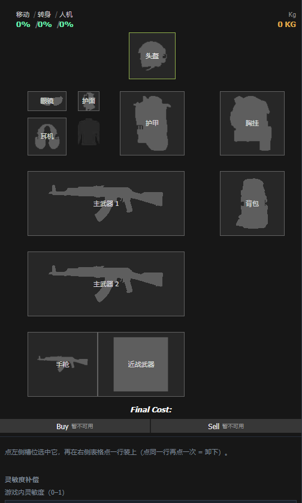
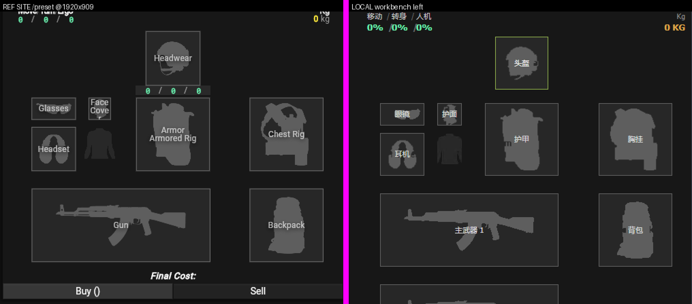
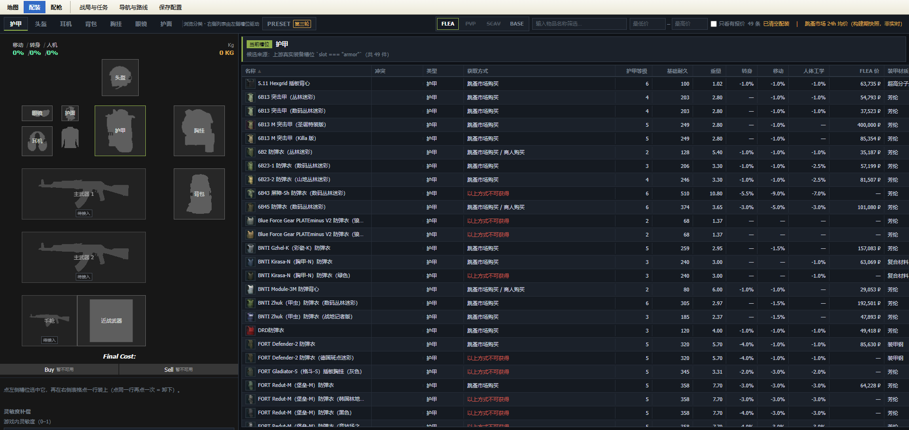
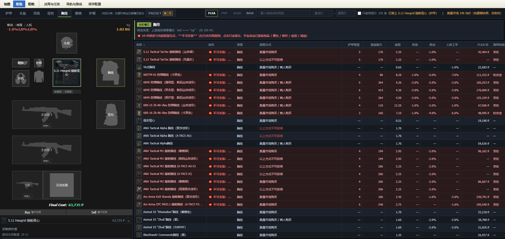
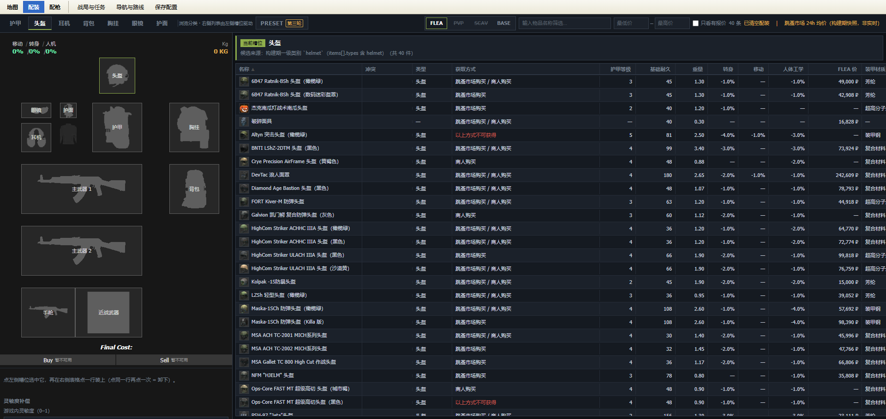
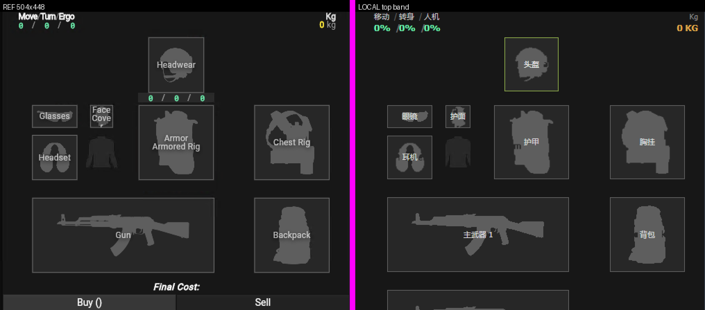
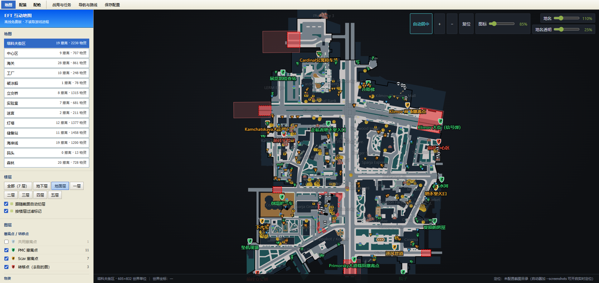

配装工作台 · 第四轮返工交付报告
① 左侧工作区已按用户提供的 配装参考布局.png 逐像素复刻，上一轮自绘的 SVG 人形（LW_BANDS / LW_SIL / silSvg）
已按要求删除，改用从参考图抠出的本地 PNG 剪影；
② 左栏宽度由实测比例决定（--lw-side-w 可调变量），不再是猜的 400px；
③ 防弹衣槽与胸挂槽候选改按上游真实装备槽位 slot 判定，装甲胸挂不再串槽；
④ 全量回归 645 passed / 1 skipped，地图及其他模块零回归；
⑤ 全部结论基于真实浏览器截图与运行时实测值，非 DOM 断言替代。
证据清单对照（用户要求的 7 项）
| # | 用户要求 | 交付物 | 状态 |
|---|---|---|---|
| 1 | 用户提供的布局参考图 | docs/refs/配装参考布局.png | 已收录 |
| 2 | 修改后的左侧工作区截图 | r4-01-workbench-1920x909.png、r4-02-side-empty.png、r4-04-side-full-2x.png | 已交 |
| 3 | 同视口下参考站 vs 本地对照截图 | r4-03-ref-vs-local-top.png、r4-07-refsite-preset-1920x909.png、r4-08-refsite-vs-local.png | 已交 |
| 4 | 防弹衣槽候选列表截图 | r4-05-armor-slot-candidates.png | 已交 |
| 5 | 胸挂槽候选列表及冲突状态截图 | r4-06-rig-slot-conflict.png | 已交 |
| 6 | 新增动态测试 + 全量回归结果 | 本报告 §5（T19 共 13 条断言；全量 645 passed / 1 skipped） | 已交 |
| 7 | 实际复用的本地图标清单 | 本报告 §6（assets/slot-glyphs/ 10 张 + 近战源图 1 张） | 已交 |
1. 以用户提供的布局图为强制设计基准
参考文件：D:\personal\trae\02-塔科夫\ui图标\配装参考布局.png（副本已收进
docs/refs/ 作验收证据①）。本轮实际打开并逐块核对了该图与 ui图标 目录内的剪影素材，
以它为左侧装备工作区的布局基准：卡片排列、间距、比例、剪影位置、槽位名称、选中边框、统计区域与费用区域，
全部按该图实测还原。

504×448 整幅即左侧工作区 1:1（顶部数值条 + 深色卡片阵 + 灰剪影 + 居中白字槽位名 + 选中绿描边 + 底部 Final Cost / Buy|Sell）。

与参考图同区域对照：卡片位置、尺寸、间距、剪影位置一致。
1.1 上一轮自绘剪影已删除，改用参考图原生素材
- 删除：
LW_BANDS/LW_SIL/silSvg()—— 上一轮自行画出的 SVG 人形与卡片剪影， 不再作为正式设计（静态断言已加「这些符号不得回潮」）。 - 改用：构建期用 Pillow 从参考图逐块抠出的透明底 PNG（
tools/extract_slot_glyphs.py）， 运行期只<img class="lw-sil">直接引用，不联网、不加 CSS 动画 / transform。 - 整张静态示意图未被当作最终交互界面：卡片是真实
<button>、剪影是独立素材， 参考图只用于抠素材 + 定几何。 - 躯干装饰剪影保真：参考站与参考图实测灰度均为 40，此前本地误涂统一剪影灰 94； 已在提取脚本对无边框装饰保留原像素灰度，重新导出后本地实测为 40（与参考图一致）。
2. 左侧宽度与整体布局：实测重定，不再猜像素
重新打开目标站（https://db4tarkov.com/preset）与参考图，在一致视口（1920×909）下测量。
目标站是 Flutter 画布应用（main.dart.js、DOM 无元素、canvas 数为 0），
无法读 DOM 几何，故用截图量取面板矩形：参考站左侧面板 = 505×445，位于视口 (50, 86)；
与用户参考图 504×448 是同一块。左栏宽度据此按 1:1 定为 504。
| 测量项 | 参考站 / 参考图实测 | 本地落地方式 |
|---|---|---|
| 左右区域宽度比例 | 左侧固定面板 505 × 视口 1920 ≈ 26.3% | --lw-side-w: min(504px, 30vw)（小视口按 30vw 自适应） |
| 几何基本单位 | 505×445 固定盒 | --lw-u: calc(var(--lw-side-w) / 504) —— u=1px 时与参考图逐像素对齐 |
| 卡片横向四列 | A 65 / 间隙 19 / B 33 / 间隙 37 / C 108 / 间隙 59 / D 108 | .lw-board 7 轨道：65u 19u 33u 37u 108u 59u 108u |
| 左右内边距 | 46 / 29 | padding: 0 29u 0 46u |
| 纵向行序 | 头盔 78 → 2 → 子槽条 13 → 5 → 四列行 107 → 26 → 枪械行 108 … | 11 行 minmax(参考值, auto)：空配装逐像素对齐，装带子槽装备时行自然长高 |
| 头盔卡 / 护甲·胸挂 / 枪械卡 | 78×78 / 108×107 / 262×108 | 三张卡尺寸均按 u 值逐格给定 |
| 顶部统计条高度 | 3 个绿色数值（移动 / 转身 / 人机）+ 右上 Kg | .lw-stats 54px；仅 3 个绿色值（用户确认），无第四个 |
| 附件槽与父装备相对位置 | 父卡片正下方 13u 高细分段条 | 子槽条由 renderGearTree 紧跟父卡产出，不集中到面板底部 |
| 底部费用区 | Final Cost + Buy | Sell | .lw-cost 118px（合计 38 + 档位 23 + 明细 52） |
实测复核（同一 CDP 会话内设置视口覆盖后取值）：左栏 offsetWidth = 504、
clientWidth = 503（仅减 1px 右边框，headless 用覆盖式滚动条不占宽），
卡片板内边距 0px 29px 0px 46px，10 个 .lw-cellbox 横坐标 A=46 / B=130 / C=200 / D=367，
头盔卡 215..293（78 宽）、护甲 / 胸挂卡 108×107、枪械卡 262×108 —— 与参考图逐像素一致。

卡片位置 / 尺寸 / 间距、剪影位置、躯干装饰灰度基本对齐。
顶部统计条 → 卡片板（含新增两行武器槽）→ 费用区 → 辅助区块。
2.1 左栏宽度已收敛为可调 CSS 变量
- 宽度定义在
.loadout-workbench作用域内（--lw-side-w/--lw-u）， 未写进:root，不污染地图视图与左侧地图栏的全局宽度（静态断言已加此约束）。 - 网格：
grid-template-columns: var(--lw-side-w) minmax(0, 1fr)，保持响应式。 - 验收视口 1920×909：左侧装备工作区充分呈现目标布局，未通过缩小槽位或压缩附件给右侧表格让位。
3. 防弹衣 / 胸挂候选集合修复（本轮功能错误）
cat === "armor" 共 72 件 = 真护甲 49 件 + 装甲胸挂 23 件；
这 23 件的上游真实装备槽位是 slot === "rig"，但按 types(armor+rig) 优先级被归成了 cat === "armor"。
只看 cat 会让它们同时混进防弹衣槽候选、又从胸挂槽候选里消失 —— 即用户报告的功能错误。
| 判定对象 | 规则（只用真实槽位，不用广义 pt/types/名称/「有无护甲」） | 实测量 |
|---|---|---|
| 防弹衣根槽候选 | slot === "armor" | 49 件 |
| 胸挂根槽候选 | slot === "rig"（含 23 件装甲胸挂） | 105 件 |
| 装甲胸挂（互斥判据） | pt === "ChestRig" 且 aps[] 带真实防护（fx 或 plates） | 双向互斥成立 |
| 普通无装甲胸挂 | 无任何 aps → 不判互斥 | 不被误禁 |
| 其余根槽（头盔/耳机/眼镜/护面/背包） | 上游无独立 slot → 沿用构建期 cat（判定依据写在 audit.rules） | 保持原状 |
实现位置：app.js 的 SLOT_DRIVEN_ROOTS / inRootSlot()；
candidatesOf() 根槽分支改为 if (inRootSlot(items[id], key))；
候选来源说明同步写明「上游真实装备槽位 slot === "armor" / "rig"」。
互斥仍由统一的 installCheck() 在安装前判定，不靠归类来挡、也不只禁用按钮。
3.1 浏览器端 5/5 实测通过
| # | 需求 | 实测结果 |
|---|---|---|
| 1 | 点防弹衣槽只显示该槽真正允许的物品，不含装甲胸挂 | armor_rows = 49，armor_hasArmoredRig = false |
| 2 | 点胸挂槽显示属于该槽的合法候选（含装甲胸挂） | rig_rows = 105，armoredRig_present = true |
| 3 | 装甲胸挂与已装备防弹衣互斥时红 + 禁装 | equipped = 5.11 Hexgrid 插板背心；armoredRig conflict / locked 均 true；提示含「防弹衣与装甲弹挂互斥」；点它装不上 |
| 4 | 卸下防弹衣后红态正确解除 | afterUnload rig_conflictN = 0 |
| 5 | 替换父装备后按新槽位重新计算候选 | rig_slot_after_blocked 仍为「胸挂」（未复用前一槽位结果） |

49 件、无任何装甲胸挂混入（已装备 5.11 Hexgrid 插板背心）。

105 件；装甲胸挂（5.11 Tactical TacTec）红色 + 禁装 + 原因标注。
4. 视觉验收（真实浏览器截图）
本轮不新增枪械预设、其他数据字段或新图标系列，只做视觉验收与上述候选修复。
检查项：左侧布局按参考图还原 ✔ / 原始视觉资产真正复用 ✔ / 左栏宽度合适 ✔ /
父装备与附件槽位置与指定布局一致 ✔ / 右侧只显示当前槽位合法候选 ✔ /
列头·列宽·对齐保持正确 ✔ / 地图及其他已有模块保持原状 ✔（见 r4-09）。

左栏按参考图复刻，右栏只呈现当前选中槽位的合法候选。


5. 测试结果（证据⑥）
| 测试 | 范围 | 结果 |
|---|---|---|
python -m pytest tests -q | 全量回归 | 645 passed / 1 skipped（基线 644 / 1） |
test_slot_driven_model_dynamic | 槽位驱动纯逻辑（node 真跑） | 167 checks passed（新增 T19 共 13 条） |
test_css_left_width_is_a_scoped_variable | 左栏宽度变量作用域 | 新增并通过 |
| 浏览器端候选分类脚本 | 需求③ 5 条端到端 | 5 / 5 通过 |
5.1 新增 T19 断言（覆盖需求③的 5 条行为）
- 防弹衣槽候选只含真实
slot=armor的物品（不含 rigArmored / rigPlain / rigA）； - 装甲胸挂虽是
cat=armor但真实slot=rig→ 被防弹衣槽排除（判定认 slot 不认 cat）； - 「分类错配」反向样本
cat=rig / slot=armor只进防弹衣槽、不进胸挂槽； - 两个根槽的候选来源说明均写明按上游真实槽位
slot判定； - 已穿防弹衣时：装甲胸挂红 + 禁装 + 原因可读，普通无装甲胸挂不被误禁，点红态装不上且防弹衣仍在；
- 卸下防弹衣后红态解除并可实际装上；
- 替换父装备后子槽按新槽位定义重算（旧 nvg 子槽不残留）。
夹具同步增强：所有护甲 / 胸挂样本补 slot 字段；rigArmored 设为真实的「分类错配」形态
（types=[armor,rig]、cat=armor、slot=rig）；新增 armorMisCat
（cat=rig、slot=armor）反向样本。harness 抽取新增 SLOT_DRIVEN_ROOTS / inRootSlot。
6. 实际复用的本地图标清单（证据⑦）
全部为本地素材，运行期无网络请求；剪影由构建期工具从用户参考图抠取，未引入任何风格不同的新图标。
| 文件 | 用途 | 尺寸 | 体积 |
|---|---|---|---|
assets/slot-glyphs/helmet.png | 头盔槽空槽剪影 | 78×78 | 402 B |
assets/slot-glyphs/headphones.png | 耳机槽剪影 | 63×63 | 391 B |
assets/slot-glyphs/glasses.png | 眼镜槽剪影 | 63×30 | 208 B |
assets/slot-glyphs/face.png | 护面槽剪影 | 31×29 | 232 B |
assets/slot-glyphs/torso.png | 躯干装饰剪影（无边框、不可点） | 36×45 | 858 B |
assets/slot-glyphs/armor.png | 护甲槽剪影 | 106×106 | 547 B |
assets/slot-glyphs/rig.png | 胸挂槽剪影 | 106×106 | 534 B |
assets/slot-glyphs/gun.png | 主武器 1 / 主武器 2 / 手枪 复用 | 260×106 | 809 B |
assets/slot-glyphs/backpack.png | 背包槽剪影 | 106×106 | 502 B |
assets/slot-glyphs/melee.png | 近战武器槽剪影 | 145×108 | 331 B |
assets/icons-items/57e26ea924597715ca604a09.webp | 近战剪影源图（项目既有物品图标库） | — | 1 324 B |
共 11 个本地文件。提取工具：tools/extract_slot_glyphs.py（构建期 Pillow，非运行期依赖）；
导出的 assets/slot-glyphs/_debug/ 联系表为调试产物，已清理。
7. 本轮明确保留的差异与未做项
| 项 | 说明 | 来源 |
|---|---|---|
| 槽位名称为中文 | 头盔 / 眼镜 / 护面 / 耳机 / 护甲 / 胸挂 / 主武器1 / 背包（参考站为英文） | 用户本轮决策 |
| 左栏比参考图更高 | 参考图止于 Buy|Sell；其后 171px 辅助区块保留在左栏下方，且新增两行武器槽 | 用户本轮决策 |
| 头盔槽默认选中显绿描边 | 参考站初始不选中（右侧显示 "Choose gear"） | 既有交互，未改 |
| 「待接入」小标签已去掉 | 枪械类槽位不再打标签；候选仍为空，不拿普通物品列表冒充预设 | 用户本轮决策 |
| 枪械槽配装、商人买/卖价 | 本轮未接入（不在第四轮范围内），界面未用假数据冒充 | 范围外 |